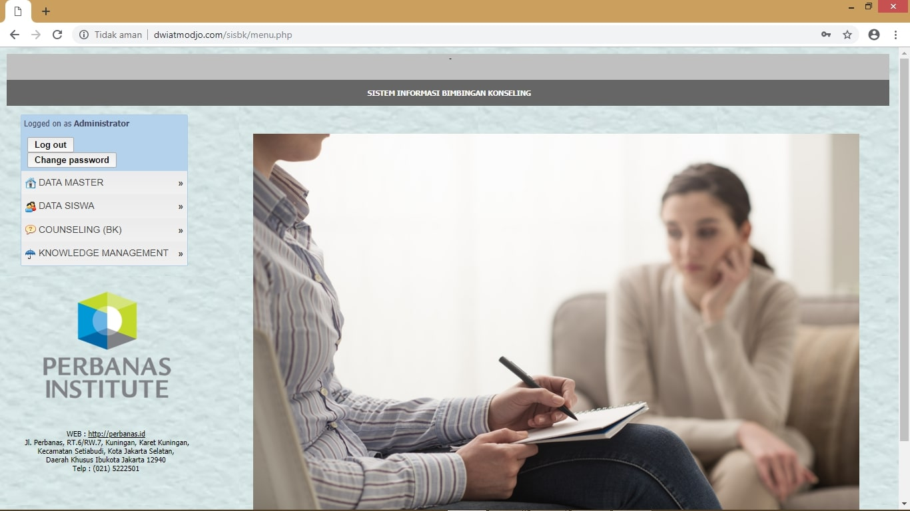
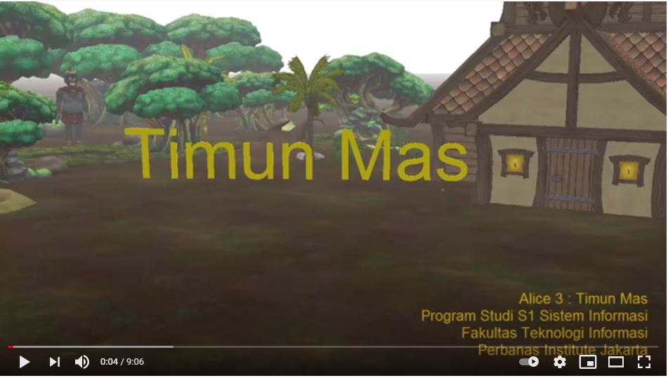

Projek
Sistem Informasi Pengelolaan Masjid
 Waktu : Januari - Februari 2021
Waktu : Januari - Februari 2021
Sistem Informasi Penjadwalan Fasilitas
 Waktu : Oktober - Desember 2020
Waktu : Oktober - Desember 2020
SPK Penentuan Tempat Prakerin Siswa SMK
 Waktu : Agustus - Oktober 2019
Waktu : Agustus - Oktober 2019
 Waktu : Januari - Februari 2019
 Waktu : Mei - Juni 2016
Tentang Saya
-
IT Freelancer
2019 - Sekarang
Sebagai seorang IT Freelancer saat ini saya menyediakan layanan konsultasi dan pembuatan projek IT yang berkaitan dengan pengembangan web.
-
System Designer (IT Bootcamp)
2017
Posisi saya dalam tim projek IT Bootcamp adalah sebagai System Designer yang bekerja mendesain Sistem Informasi Pelaksanaan Skripsi Online (SIPSO).
-
Kuliah
2015-2020
Saya merupakan lulusan Program Studi S1-Sistem Informasi dari Kampus Perbanas Institute Jakarta.